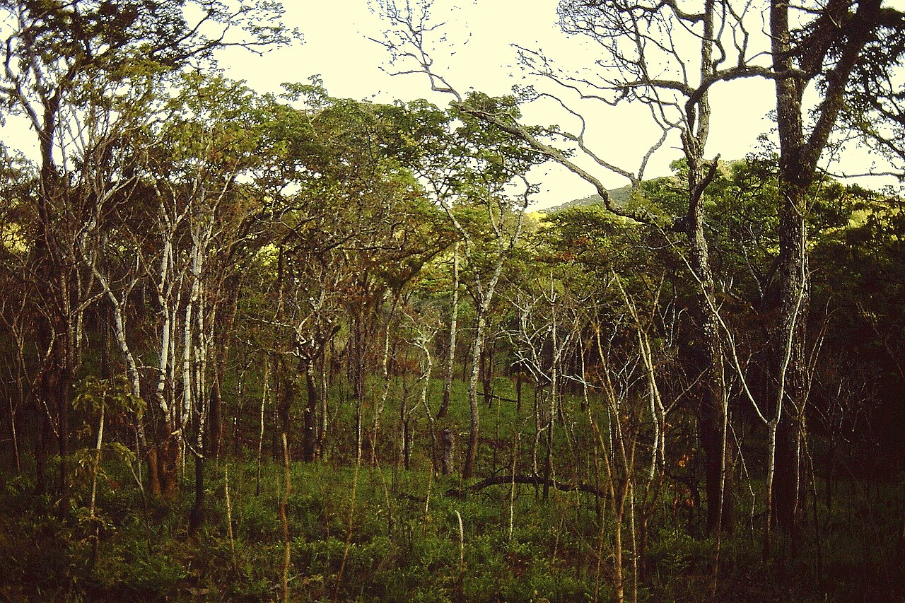

SLM · Neglected & underutilized species

Traditional Grains & Pulses (NUS)
Drought-hardy indigenous crops at the heart of several country themes

Miombo woodland on the Niassa Plateau — the dry, single-season country where neglected and underutilized crops anchor food security. Photo: Lichinga, CC BY-SA 4.0, via Wikimedia Commons
What it is
Several country themes (Angola, Botswana, Zimbabwe, Namibia) rest on neglected and underutilized species (NUS) — drought-hardy indigenous grains and pulses that diversify diets and income while needing little water. They anchor food security where rains are poor and erratic.
How it works
- Grow drought-tolerant indigenous grains and pulses — Bambara groundnut, Morama bean, finger and pearl millet, pigeon pea, hyacinth and African yam bean
- Choose species matched to poor soils and a single, unreliable wet season
- Use legumes to fix nitrogen and rebuild soil fertility between cereal crops
- Secure seed through community seed systems so resilient varieties stay available
- Build local value chains and markets so NUS crops earn, not just feed
Key facts
- Champions
- Angola · Botswana · Zimbabwe · Namibia
- Crops
- Bambara groundnut, Morama bean, millets, pigeon pea
- Trait
- Drought-hardy, low-water, nutrient-dense
- Co-benefits
- Food security · dietary diversity · soil fertility
- Delivery
- Community seed systems & FFPOs
Why it matters
In a woodland shaped by one short, unreliable wet season, crops that ripen on little water are food security itself. NUS species spread risk across the dry years and keep families fed when a single staple would fail (Campbell, 1996).
WOCAT classification
- Measures
- AMAgronomic · Management
- WOCAT group
- Cropland management / neglected & underutilized species
- Degradation addressed
- Soil fertility declineReduced crop diversity
Classified per the WOCAT SLM-Technologies classification.
✦Source and links
Sources (APA, 7th ed.).
- Campbell, B. (Ed.). (1996). The miombo in transition: Woodlands and welfare in Africa. Center for International Forestry Research (CIFOR). PDF
- Dewees, P. A., Campbell, B. M., Katerere, Y., Sitoe, A., Cunningham, A. B., Angelsen, A., & Wunder, S. (2010). Managing the miombo woodlands of southern Africa: Policies, incentives and options for the rural poor. Journal of Natural Resources Policy Research, 2(1), 57–73. https://doi.org/10.1080/19390450903350846